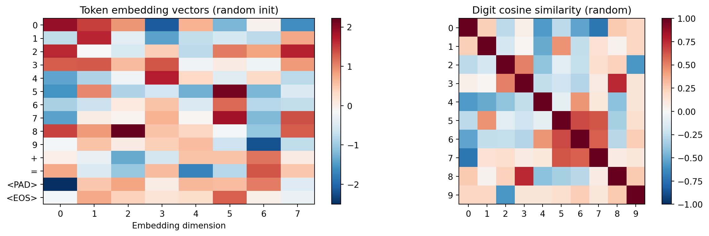
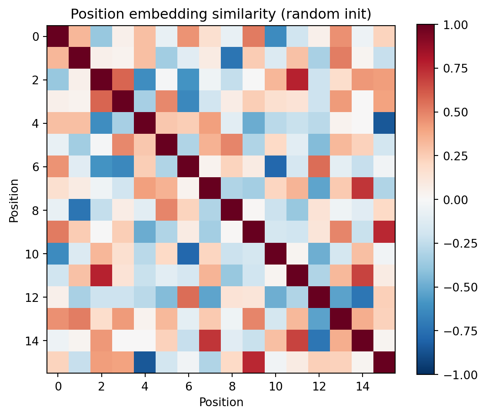
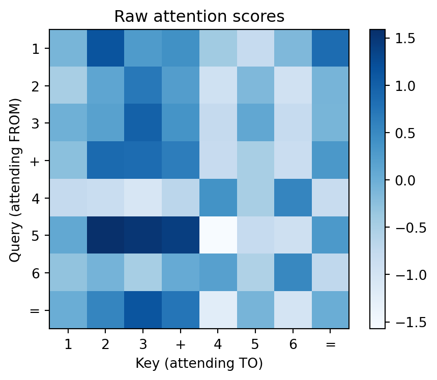
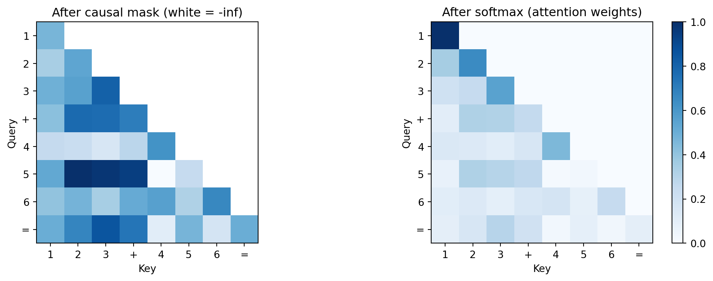
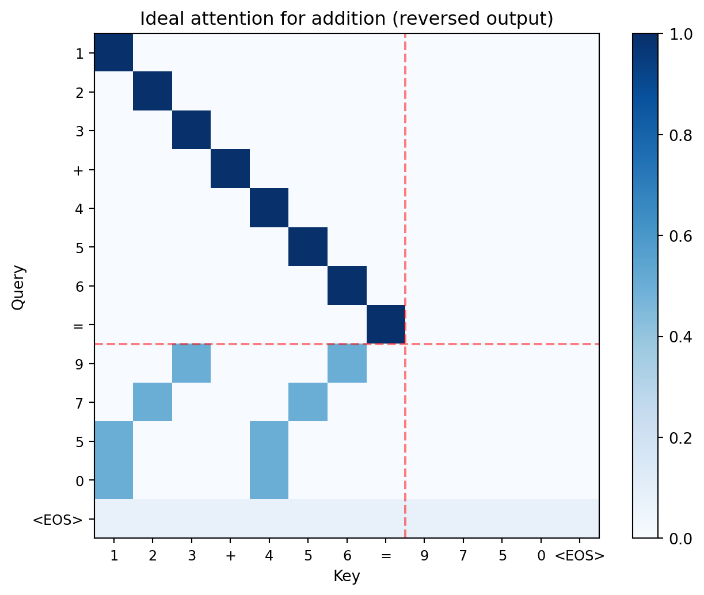
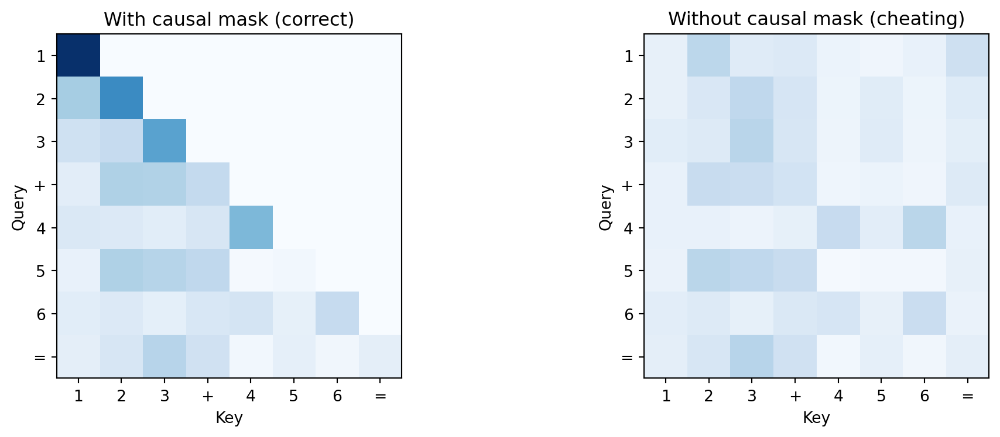
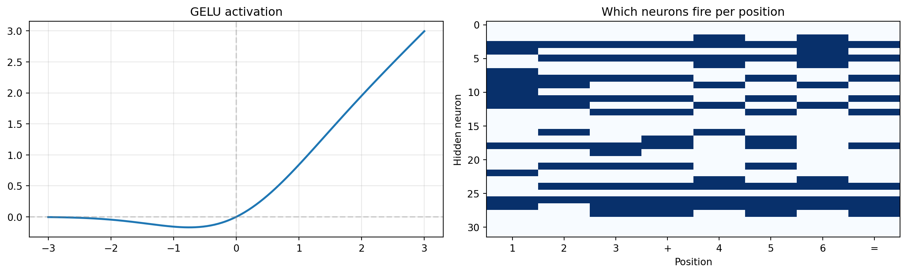
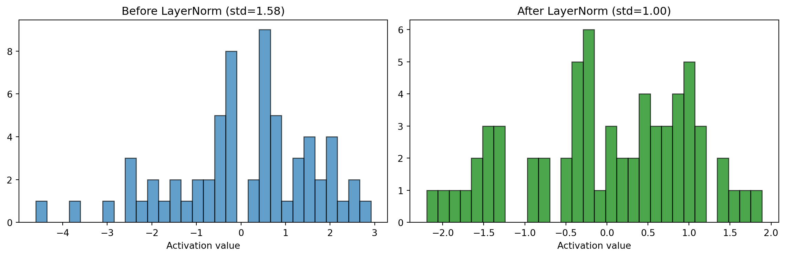

from _common import *
torch.manual_seed(42)<torch._C.Generator at 0x12000eed0>A transformer has five components, each with a specific job: embeddings map tokens to vectors, positions encode order, attention gathers information across positions, FFN computes on it, and residuals + layernorm keep the signal stable through layers.
from _common import *
torch.manual_seed(42)<torch._C.Generator at 0x12000eed0>Here’s what we’re doing in this chapter: we’re going to build a neural network piece by piece, from the ground up. The input is a sequence of token IDs (integers like [1, 2, 3, 10, 4, 5, 6, 11] representing 123+456=), and the output is a prediction: what token comes next? The network has no built-in knowledge of addition — it’s just matrices of random numbers that we’ll train to produce correct answers.
Before diving into each component, it helps to see the full pipeline and what job each piece does. The point of these two diagrams is: a transformer is a sequence of simple operations, and each one has one job.
flowchart TD
A["Input: token IDs"] --> B["Token Embedding<br/>14 × 32 = 448 params"]
A --> C["Position Embedding<br/>13 × 32 = 416 params"]
B --> D["Add token + position vectors"]
C --> D
D --> E["Transformer Block 1<br/>~8,400 params"]
E --> F["Transformer Block 2<br/>~8,400 params"]
F --> G["Final LayerNorm<br/>64 params"]
G --> H["Linear Head<br/>tied to Token Embedding"]
H --> I["Predicted next token"]
style B fill:#e1f0ff,stroke:#333
style C fill:#e1f0ff,stroke:#333
style E fill:#fff3e0,stroke:#333
style F fill:#fff3e0,stroke:#333
style H fill:#e1f0ff,stroke:#333
Three things to notice in Figure 2.1:
123+456= and 321+654= would look identical.Now let’s open up the orange boxes. Each transformer block has the same internal structure:
flowchart TD
X["Input from previous layer"] --> LN1["LayerNorm<br/>64 params"]
LN1 --> SA["Self-Attention<br/>W_Q: 32×32, W_K: 32×32<br/>W_V: 32×32, W_out: 32×32<br/>4,096 params"]
SA --> ADD1["Add residual"]
X -.-> ADD1
ADD1 --> LN2["LayerNorm<br/>64 params"]
LN2 --> FFN["Feed-Forward Network<br/>W_1: 32×64 + bias = 2,112<br/>W_2: 64×32 + bias = 2,080<br/>4,192 params"]
FFN --> ADD2["Add residual"]
ADD1 -.-> ADD2
ADD2 --> OUT["Output to next layer"]
style SA fill:#e1f0ff,stroke:#333
style FFN fill:#fff3e0,stroke:#333
The key division of labor in Figure 2.2:
Before counting parameters, let’s trace a concrete training example through the network. This clarifies what’s data flowing through versus what are coefficient matrices being learned — the analog of \(\beta\) in regression.
During training, the model receives the complete 13-token sequence — input and answer — all at once:
Position: 0 1 2 3 4 5 6 7 8 9 10 11 12
Token: 1 2 3 + 4 5 6 = 9 7 5 0 <EOS>At every position, the model’s job is: “predict the next token.” Positions 0–6 are just format learning (the model discovers that + always follows three digits, = always follows six tokens). The real work is positions 7–11: predicting the reversed answer digits. All 12 predictions happen in a single forward pass.
The data flows through a chain of matrix multiplications. Each × below is a multiplication by a trainable coefficient matrix — these are the numbers that gradient descent adjusts. Everything else (softmax, GELU, masking, addition) is a fixed operation with no parameters:
[13 token IDs]
× Embedding table (14×32) ← trainable coefficients
+ Position table (13×32) ← trainable coefficients
[13 × 32 matrix] ← 13 positions, each a 32-dimensional vector
│
│ Block 1:
│ × W_Q, W_K, W_V (32×32 each) ← trainable coefficients
│ score → mask → softmax ← fixed (no parameters)
│ × W_out (32×32) ← trainable coefficients
│ × W₁ (32×64), GELU, × W₂ (64×32) ← trainable coefficients
│
│ Block 2: same structure, different coefficient matrices
│
[13 × 32 matrix] ← same shape — data enters and exits each block as (13, 32)
│
× Embedding tableᵀ (32×14) ← reused from above (weight tying)
[13 × 14 matrix] ← 13 rows, each a score over the 14-token vocabularyRow 7 of the output should assign high probability to 9 (the ones digit of 579). Row 8 should predict 7 (tens digit). The loss function compares all 12 predictions to the correct answers and tells every coefficient matrix which direction to adjust.
Notice the shape stays (13, 32) throughout the middle of the network. Attention rearranges information between the 13 positions (via a 13×13 score matrix). The FFN transforms each of the 13 positions independently. Two different jobs, same input/output shape.
Where is the causal mask? Inside each block’s attention computation. After computing the 13×13 score matrix (\(Q \times K^T\)), the mask sets the upper triangle to \(-\infty\). After softmax, \(e^{-\infty} = 0\), so position 8 gets zero information from positions 9–12. This means each position can only attend to itself and earlier positions — even though all 13 tokens are present in the input.
This matters because after training, the model generates answers one token at a time: feed in 123+456= (8 tokens), predict position 8, append it, predict position 9, and so on. The mask ensures the model practices under the same constraint during training that it faces during generation.
Every trainable parameter is a single number that gradient descent will adjust. Let’s walk through each component in Figure 2.1 and Figure 2.2 to see where the model’s 17,760 parameters come from.
Token embedding (448 params). A lookup table with one row per vocabulary item, one column per dimension. We have 14 tokens in our vocabulary (digits 0–9, +, =, <PAD>, <EOS>) and d_model=32, so it’s a 14 × 32 matrix = 448 numbers. When the model sees token ID 3, it retrieves row 3 — a vector of 32 numbers. The number of rows is the vocabulary size.
Position embedding (416 params). A separate lookup table with one row per position in the sequence. Our sequences are 13 tokens long (aaa+bbb=ssss<EOS>), so it’s a 13 × 32 matrix = 416 numbers. Position 0 gets one vector, position 12 gets a different vector. The number of rows is the sequence length, not the vocabulary size — that’s why it’s 13 × 32 instead of 14 × 32. Token embedding answers “what is this token?”; position embedding answers “where is this token?”
Self-attention (4,096 params per block). Attention needs four weight matrices, each 32 × 32:
Total: 4 × 1,024 = 4,096 params. These are the matrices that determine which positions attend to which — the core of what makes a transformer work.
Feed-forward network (4,192 params per block). Two linear layers with biases:
d_model to d_ff, giving the model more “workspace” for computation.d_model.Total: 4,192 params. Between \(W_1\) and \(W_2\) sits the GELU activation, which has no trainable parameters — it’s a fixed nonlinear function.
LayerNorm (64 params per norm). Two learnable parameters per dimension: a scale (\(\gamma\)) and shift (\(\beta\)), both vectors of length 32. That’s 64 params per LayerNorm. Each block has 2 norms = 128, plus one final norm = 64.
Linear head (0 extra params). The output head reuses the token embedding matrix (transposed). This is called weight tying — it means “the embedding for digit 3” and “the output pattern that predicts digit 3” are the same vector. No extra parameters.
Total:
| Component | Params |
|---|---|
| Token embedding | 448 |
| Position embedding | 416 |
| Block 1: attention | 4,096 |
| Block 1: FFN | 4,192 |
| Block 1: norms | 128 |
| Block 2: attention | 4,096 |
| Block 2: FFN | 4,192 |
| Block 2: norms | 128 |
| Final norm | 64 |
| Linear head | (tied) |
| Total | ~17,760 |
That’s the entire model. Every one of these 17,760 numbers starts random and gets adjusted by gradient descent. On a laptop CPU, training takes under a minute. GPT-2 Small has 124 million parameters (7,000× more) — same components, bigger matrices.
Every trainable parameter — embeddings, attention projections (Q, K, V matrices), FFN weights, the output head — starts as random numbers. The model begins knowing nothing about addition.
Forward pass. Input tokens flow top-to-bottom through Figure 2.1. Each token ID gets looked up in the embedding table, combined with its position, processed through the two transformer blocks, and projected to a probability distribution over the 14-token vocabulary. The highest-probability token is the model’s prediction.
Loss. Cross-entropy loss measures how wrong the prediction is. At initialization, the model assigns roughly equal probability to all 14 tokens, so loss starts around \(-\log(1/14) \approx 2.6\).
Backward pass (gradient descent). Gradients flow backward through every arrow in both diagrams, computing “how should each parameter change to reduce the loss?” This includes the embedding tables — the gradient tells each embedding vector which direction to shift. Embeddings are learned from data exactly like every other weight matrix; there is nothing hand-designed about them.
Update. The optimizer (AdamW) nudges every parameter in the direction that reduces loss. One forward-backward-update cycle is one training step. After thousands of steps, the random initial weights converge to values that implement an addition algorithm.
The key insight: all parameters update simultaneously on every step. The model discovers how to use each component by finding weight configurations where embeddings, attention, FFN, and the output head work together.
d_model meansEvery token in the transformer is represented as a vector of numbers. d_model is the length of that vector — it’s how many numbers the model uses to describe each token at each position.
With d_model=32, the digit 3 isn’t a single number — it’s a list of 32 numbers like [0.12, -0.45, 0.78, ...]. The model packs everything it knows about a token into this vector: its numeric value, its role in the sequence, information gathered from other positions. All computation in the transformer — attention scores, FFN transformations, the final prediction — operates on these 32-dimensional vectors.
Why 32 and not 2 or 1000? It’s a capacity knob. Too small and there aren’t enough dimensions to encode the distinctions the model needs (ones digit vs. hundreds digit, carry vs. no carry). Too large and you waste parameters on dimensions the model doesn’t use. For 3-digit addition, 32 is enough. GPT-2 uses 768; Llama 3 8B uses 4,096 — they need more dimensions because natural language has far more distinctions to encode.
In this chapter, we’ll use d_model=8 so we can print every value and see what’s happening. The real model uses d_model=32; the mechanics are identical, just with longer vectors.
An embedding is a lookup table: token ID in, vector out.
d_model_demo = 8
demo_emb = nn.Embedding(VOCAB_SIZE, d_model_demo)
tokens = torch.tensor([0, 1, 2, 3, 9, 10, 11])
embedded = demo_emb(tokens)
print("Token embeddings (before training):")
for i, t in enumerate(tokens.tolist()):
vec = embedded[i].detach().numpy()
print(f" '{VOCAB_INV[t]}' (id={t}): [{', '.join(f'{v:+.2f}' for v in vec)}]")Token embeddings (before training):
'0' (id=0): [+1.93, +1.49, +0.90, -2.11, +0.68, -1.23, -0.04, -1.60]
'1' (id=1): [-0.75, +1.65, -0.39, -1.40, -0.73, -0.56, -0.77, +0.76]
'2' (id=2): [+1.64, -0.16, -0.50, +0.44, -0.76, +1.08, +0.80, +1.68]
'3' (id=3): [+1.28, +1.30, +0.61, +1.33, -0.23, +0.04, -0.25, +0.86]
'9' (id=9): [-0.17, +0.52, +0.06, +0.43, +0.58, -0.64, -2.21, -0.75]
'+' (id=10): [+0.01, -0.34, -1.34, -0.59, +0.54, +0.52, +1.14, +0.05]
'=' (id=11): [+0.74, -0.48, -1.05, +0.60, -1.72, -0.83, +1.33, +0.48]Before training, these are random — we’re establishing a baseline to compare against Chapter 4, where training reshapes this space. The digit ‘3’ has no special relationship to ‘4’.
digit_embs = demo_emb(torch.arange(10))
norms = digit_embs / digit_embs.norm(dim=1, keepdim=True)
sim = (norms @ norms.T).detach().numpy()
fig, axes = plt.subplots(1, 2, figsize=(12, 4))
all_embs = demo_emb.weight.detach().numpy()
im = axes[0].imshow(all_embs, aspect='auto', cmap='RdBu_r')
axes[0].set_yticks(range(VOCAB_SIZE))
axes[0].set_yticklabels([VOCAB_INV[i] for i in range(VOCAB_SIZE)])
axes[0].set_xlabel('Embedding dimension')
axes[0].set_title('Token embedding vectors (random init)')
plt.colorbar(im, ax=axes[0])
im2 = axes[1].imshow(sim, cmap='RdBu_r', vmin=-1, vmax=1)
axes[1].set_xticks(range(10)); axes[1].set_yticks(range(10))
axes[1].set_xticklabels(range(10)); axes[1].set_yticklabels(range(10))
axes[1].set_title('Digit cosine similarity (random)')
plt.colorbar(im2, ax=axes[1])
plt.tight_layout()
plt.show()
No structure in the similarity matrix — all digit pairs are roughly equally similar. After training (Chapter 4), digits that play similar arithmetic roles will cluster: digits that frequently produce carries (8, 9) will separate from those that rarely do (0, 1).
Without position information, the model sees a bag of tokens — 123+456= and 321+654= would be indistinguishable.
max_len = 16
pos_emb = nn.Embedding(max_len, d_model_demo)
digit_5 = demo_emb(torch.tensor([5])).squeeze()
print("Same token '5' at different positions:")
for pos in [0, 4, 7]:
pos_vec = pos_emb(torch.tensor([pos])).squeeze()
combined = digit_5 + pos_vec
print(f" Position {pos}: [{', '.join(f'{v:+.2f}' for v in combined.detach().numpy())}]")
print()
print("Position 0 = hundreds digit of operand a.")
print("Position 4 = hundreds digit of operand b.")
print("The position embedding shifts the same token into different regions.")Same token '5' at different positions:
Position 0: [-3.01, +0.89, -1.48, -0.12, -0.55, +2.21, -1.62, +0.04]
Position 4: [-2.53, +1.95, +0.74, +0.85, -1.00, +1.91, -1.97, -0.38]
Position 7: [-3.16, +2.35, +0.41, -0.55, -2.82, +2.88, -0.46, +1.54]
Position 0 = hundreds digit of operand a.
Position 4 = hundreds digit of operand b.
The position embedding shifts the same token into different regions.Do positions with the same computational role start out nearby? For example, positions 0 and 4 both hold hundreds digits — we’d expect them to be similar after training, but at initialization they’re random.
pos_vecs = pos_emb.weight.detach()
pos_norms = pos_vecs / pos_vecs.norm(dim=1, keepdim=True)
pos_sim = (pos_norms @ pos_norms.T).numpy()
fig, ax = plt.subplots(figsize=(6, 5))
im = ax.imshow(pos_sim, cmap='RdBu_r', vmin=-1, vmax=1)
ax.set_xlabel('Position'); ax.set_ylabel('Position')
ax.set_title('Position embedding similarity (random init)')
plt.colorbar(im)
plt.tight_layout()
plt.show()
print("Adjacent positions aren't necessarily similar --- the model just needs them distinguishable.")
Adjacent positions aren't necessarily similar --- the model just needs them distinguishable.Attention is the mechanism that lets each position look at other positions and decide what information to pull in. Think of it as a soft database lookup:
The dot product Q \(\cdot\) K measures how well a query matches each key — high dot product means “this is relevant to me.” The result is a weighted average of values, where the weights come from those match scores.
Why three separate projections instead of comparing raw embeddings? Because what a position needs (its query) is different from what it offers (its key). The ones-digit output position needs to find the ones-column inputs, but it offers carry information to the tens-digit. Three projections let each position play different roles as asker vs. answerer.
Attention in 4 steps: project (make Q, K, V) \(\to\) score (Q dot K) \(\to\) mask (hide the future) \(\to\) combine (weighted sum of V).
seq_tokens = torch.tensor([1, 2, 3, 10, 4, 5, 6, 11]) # "123+456="
seq_emb = demo_emb(seq_tokens) + pos_emb(torch.arange(len(seq_tokens)))
d_k = d_model_demo
W_Q = nn.Linear(d_model_demo, d_k, bias=False)
W_K = nn.Linear(d_model_demo, d_k, bias=False)
W_V = nn.Linear(d_model_demo, d_k, bias=False)
Q = W_Q(seq_emb)
K = W_K(seq_emb)
V = W_V(seq_emb)
print(f"Input: '{''.join(VOCAB_INV[t.item()] for t in seq_tokens)}'")
print(f"Q, K, V shapes: {Q.shape} each")
print(f"\nQ and K are the same shape --- they'll be compared via dot product.")
print(f"V is the content that gets retrieved based on those comparisons.")Input: '123+456='
Q, K, V shapes: torch.Size([8, 8]) each
Q and K are the same shape --- they'll be compared via dot product.
V is the content that gets retrieved based on those comparisons.Each of the 8 tokens gets projected into three different 8-dimensional vectors. The same input seq_emb goes through three different linear transformations, producing three different “views” of each token.
\[\text{score}(i, j) = \frac{Q_i \cdot K_j}{\sqrt{d_k}}\]
Each position \(i\) computes a dot product with every position \(j\). High score = “position \(j\) has what position \(i\) needs.” We divide by \(\sqrt{d_k}\) to keep scores from growing too large — without this, softmax would push all weight onto a single position, and gradients would vanish.
scale = d_k ** 0.5
raw_scores = (Q @ K.T) / scale
labels = [VOCAB_INV[t.item()] for t in seq_tokens]
fig, ax = plt.subplots(figsize=(5, 4))
im = ax.imshow(raw_scores.detach().numpy(), cmap='Blues')
ax.set_xticks(range(len(labels))); ax.set_xticklabels(labels)
ax.set_yticks(range(len(labels))); ax.set_yticklabels(labels)
ax.set_xlabel('Key (attending TO)'); ax.set_ylabel('Query (attending FROM)')
ax.set_title('Raw attention scores')
plt.colorbar(im)
plt.tight_layout()
plt.show()
How to read this heatmap: Each row is one position’s query asking “how relevant is each other position to me?” A bright cell at row \(i\), column \(j\) means “position \(i\) wants to attend to position \(j\).” Right now these are random (untrained weights), but after training, the addition model will learn to make the ones-output row bright at the ones-input columns.
The causal mask sets all “future” positions to \(-\infty\) before softmax. Since \(e^{-\infty} = 0\), these positions get zero attention weight. This enforces autoregression: when the model predicts the ones digit, it can’t peek at the tens digit it hasn’t generated yet.
After masking, softmax converts each row into a probability distribution (sums to 1). Each position distributes its attention budget across only the positions it’s allowed to see.
seq_len = len(seq_tokens)
causal_mask = torch.triu(torch.ones(seq_len, seq_len), diagonal=1).bool()
masked_scores = raw_scores.clone()
masked_scores[causal_mask] = float('-inf')
attn_weights = F.softmax(masked_scores, dim=-1)
fig, axes = plt.subplots(1, 2, figsize=(11, 4))
display_masked = masked_scores.detach().clone()
display_masked[causal_mask] = float('nan')
axes[0].imshow(display_masked.numpy(), cmap='Blues')
axes[0].set_title('After causal mask (white = -inf)')
axes[0].set_xticks(range(len(labels))); axes[0].set_xticklabels(labels)
axes[0].set_yticks(range(len(labels))); axes[0].set_yticklabels(labels)
im = axes[1].imshow(attn_weights.detach().numpy(), cmap='Blues', vmin=0, vmax=1)
axes[1].set_title('After softmax (attention weights)')
axes[1].set_xticks(range(len(labels))); axes[1].set_xticklabels(labels)
axes[1].set_yticks(range(len(labels))); axes[1].set_yticklabels(labels)
plt.colorbar(im, ax=axes[1])
for ax in axes:
ax.set_xlabel('Key'); ax.set_ylabel('Query')
plt.tight_layout()
plt.show()
print("Left: the upper triangle is masked out (white = -inf).")
print("Right: after softmax, each row sums to 1 --- a probability distribution over context.")
print("The '=' sign (position 7) can see all input tokens but no output tokens.")
Left: the upper triangle is masked out (white = -inf).
Right: after softmax, each row sums to 1 --- a probability distribution over context.
The '=' sign (position 7) can see all input tokens but no output tokens.\[\text{output}_i = \sum_j \text{attn\_weight}_{ij} \cdot V_j\]
Each position’s output is a weighted average of all the value vectors, where the weights come from the attention scores. If position 8 (the ones-output digit) puts weight 0.5 on position 2 (ones of operand A) and 0.5 on position 6 (ones of operand B), then its output vector is the average of those two value vectors — exactly the information needed to compute the ones-digit sum.
attn_output = attn_weights @ V
print(f"Output shape: {attn_output.shape}")
print(f"Each position is now a weighted average of the values it attended to.")
print(f"\nPosition 7 ('=') attention distribution: {attn_weights[7].detach().numpy().round(3)}")
print(f" This tells us what '=' pays attention to --- ideally it would")
print(f" focus on the operands it needs for computing the first output digit.")Output shape: torch.Size([8, 8])
Each position is now a weighted average of the values it attended to.
Position 7 ('=') attention distribution: [0.096 0.164 0.297 0.199 0.027 0.087 0.034 0.096]
This tells us what '=' pays attention to --- ideally it would
focus on the operands it needs for computing the first output digit.The four-step procedure above has a name in classical statistics: it is Nadaraya–Watson kernel regression, with three modifications. Recall the Nadaraya–Watson estimator: to predict \(f\) at a query point \(x\), take a weighted average of known values \(y_j\), where the weights come from a kernel measuring similarity between \(x\) and each \(x_j\):
\[\hat f(x) = \sum_j \frac{k(x, x_j)}{\sum_{j'} k(x, x_{j'})}\, y_j\]
Self-attention is exactly this estimator, with the substitutions \(x \to h_i\) (the current token’s representation), \(x_j \to h_j\) (the other tokens), \(y_j \to W_V h_j\) (a learned linear projection of each token’s value), and \(k(h_i, h_j) \to \exp(\langle W_Q h_i,\, W_K h_j\rangle / \sqrt{d_k})\). Stack the rows into matrices and the formula becomes \(\text{softmax}(QK^\top/\sqrt{d_k})\,V\). The output at position \(i\) is a conditional expectation \(\mathbb{E}_{j \sim p(\cdot \mid i)}[W_V h_j]\) under a probability distribution over positions induced by the kernel.
Three things distinguish attention’s kernel from a textbook one. It is learned: the matrices \(W_Q, W_K\) are fit by gradient descent against the task loss, not chosen by the modeler in advance. It is asymmetric: \(k(h_i, h_j) \neq k(h_j, h_i)\) in general because \(W_Q \neq W_K\), so the kernel can express directed influence (the answer’s tens digit needs to attend to the ones digit, but not vice versa) — a generalization that classical Mercer kernels do not allow. And it is data-dependent in a layered sense: at layer \(\ell\), the kernel acts on representations \(h^{(\ell-1)}_i\) that were themselves computed by previous layers from the specific input sequence, so the kernel’s inputs are dynamically constructed per example, even though its parameters are fixed after training.
The practical payoff of this naming: every intuition you have about kernel smoothing transfers. The entropy of the row-wise distribution \(p(\cdot \mid i)\) measures how concentrated each query’s lookup is (we use this in Chapter 4). The \(\sqrt{d_k}\) scaling is a variance stabilizer for the induced measure, not a magic engineering constant: without it, the entropy of \(p(\cdot \mid i)\) collapses toward zero as \(d_k\) grows, making every query a hard one-hot lookup. And the learned, asymmetric kernel is the structural feature that lets attention do what no fixed kernel method can: discover task-specific, directed similarity from data.
Now we can see why attention matters for addition. With reversed output, position 8 (the first output digit, = ones place) should attend to the ones columns of both operands (positions 2 and 6). Position 9 (tens place) should attend to positions 1 and 5. The trained model needs to discover this column-alignment pattern through gradient descent.
full_seq = [1, 2, 3, 10, 4, 5, 6, 11, 9, 7, 5, 0, 13] # 123+456=9750<EOS>
full_labels = [VOCAB_INV[t] for t in full_seq]
n = len(full_seq)
manual_attn = torch.zeros(n, n)
for i in range(8):
manual_attn[i, i] = 1.0
manual_attn[8, 2] = 0.5; manual_attn[8, 6] = 0.5 # ones -> ones
manual_attn[9, 1] = 0.5; manual_attn[9, 5] = 0.5 # tens -> tens
manual_attn[10, 0] = 0.5; manual_attn[10, 4] = 0.5 # hundreds -> hundreds
manual_attn[11, 0] = 0.5; manual_attn[11, 4] = 0.5 # thousands
manual_attn[12, :] = 1.0 / n
fig, ax = plt.subplots(figsize=(7, 5.5))
im = ax.imshow(manual_attn.numpy(), cmap='Blues', vmin=0, vmax=1)
ax.set_xticks(range(n)); ax.set_xticklabels(full_labels, fontsize=9)
ax.set_yticks(range(n)); ax.set_yticklabels(full_labels, fontsize=9)
ax.set_xlabel('Key'); ax.set_ylabel('Query')
ax.set_title('Ideal attention for addition (reversed output)')
ax.axhline(y=7.5, color='red', linestyle='--', alpha=0.5)
ax.axvline(x=7.5, color='red', linestyle='--', alpha=0.5)
plt.colorbar(im)
plt.tight_layout()
plt.show()
print("Each output digit attends to the matching input column.")
print("Carries flow naturally: the model has already committed to lower digits.")
Each output digit attends to the matching input column.
Carries flow naturally: the model has already committed to lower digits.unmasked_weights = F.softmax(raw_scores, dim=-1)
fig, axes = plt.subplots(1, 2, figsize=(11, 4))
axes[0].imshow(attn_weights.detach().numpy(), cmap='Blues', vmin=0, vmax=1)
axes[0].set_title('With causal mask (correct)')
axes[1].imshow(unmasked_weights.detach().numpy(), cmap='Blues', vmin=0, vmax=1)
axes[1].set_title('Without causal mask (cheating)')
for ax in axes:
ax.set_xticks(range(len(labels))); ax.set_xticklabels(labels)
ax.set_yticks(range(len(labels))); ax.set_yticklabels(labels)
ax.set_xlabel('Key'); ax.set_ylabel('Query')
plt.tight_layout()
plt.show()
print("Without the mask, the model sees future tokens during training")
print("but can't at generation time. Result: high train accuracy, low test accuracy.")
Without the mask, the model sees future tokens during training
but can't at generation time. Result: high train accuracy, low test accuracy.In the score matrix, what does a high value at row 8, column 2 mean for our addition problem? (Hint: what token is at position 8 in the output, and what token is at position 2 in the input?)
Why three projections (Q, K, V) instead of comparing embeddings directly? What would go wrong if we used the same representation for “what I need” and “what I offer”?
If we removed the \(\sqrt{d_k}\) scaling, what would happen to softmax as \(d_k\) grows? (Think about what softmax does when one input is much larger than the others, and how dot products scale with dimension.)
The FFN applies the same transformation independently at each position. Why doesn’t it need to see other positions? (Hint: what did attention already do to each position’s representation?)
Attention gathers information from other positions. The FFN computes on it, independently at each position.
This is the division of labor: attention decides “the ones output needs to look at positions 2 and 6,” then the FFN takes that gathered information and computes “3 + 6 = 9.” Attention routes, the FFN transforms.
The FFN has three steps:
d_model. The output has to be 32-dimensional so it can be added back via the residual connection and passed to the next layer.Why expand and then compress? A 32-dimensional space is too small for the model to represent all the intermediate computations it needs (is there a carry? what’s the sum mod 10?). Expanding to 64 gives it temporary workspace. The compression forces the model to distill its computation back into the information that downstream layers actually need.
d_ff_demo = 32
W_1 = nn.Linear(d_model_demo, d_ff_demo)
W_2 = nn.Linear(d_ff_demo, d_model_demo)
x = attn_output.detach()
hidden = W_1(x)
activated = F.gelu(hidden)
ffn_out = W_2(activated)
print(f"Input: {x.shape} (seq_len x d_model)")
print(f"Expanded: {hidden.shape} (seq_len x d_ff) — wider for computation")
print(f"Activated: {activated.shape} (GELU zeroes out negative values)")
print(f"Output: {ffn_out.shape} (compressed back to d_model)")Input: torch.Size([8, 8]) (seq_len x d_model)
Expanded: torch.Size([8, 32]) (seq_len x d_ff) — wider for computation
Activated: torch.Size([8, 32]) (GELU zeroes out negative values)
Output: torch.Size([8, 8]) (compressed back to d_model)The next plot shows two things: the GELU activation function itself (left panel) and which hidden neurons fire for each input position (right panel). The firing pattern reveals how the FFN begins to specialize — different positions activate different subsets of neurons.
fig, axes = plt.subplots(1, 2, figsize=(13, 4))
x_range = torch.linspace(-3, 3, 200)
axes[0].plot(x_range.numpy(), F.gelu(x_range).numpy(), linewidth=2)
axes[0].axhline(y=0, color='gray', linestyle='--', alpha=0.3)
axes[0].axvline(x=0, color='gray', linestyle='--', alpha=0.3)
axes[0].set_title('GELU activation'); axes[0].grid(True, alpha=0.3)
fire_pattern = (activated.detach().numpy() > 0.1).astype(float)
axes[1].imshow(fire_pattern.T, aspect='auto', cmap='Blues')
axes[1].set_xticks(range(len(labels))); axes[1].set_xticklabels(labels)
axes[1].set_xlabel('Position'); axes[1].set_ylabel('Hidden neuron')
axes[1].set_title('Which neurons fire per position')
plt.tight_layout()
plt.show()
print("Different positions activate different neuron subsets.")
Different positions activate different neuron subsets.In classical statistics, feature selection picks which variables matter for prediction. A linear regression decides once which features to include; a LASSO shrinks irrelevant coefficients toward zero. Attention does the same thing, but softly (weighted combination rather than hard inclusion/exclusion) and dynamically (different weights for different inputs).
When the ones-digit output position attends strongly to the ones-column inputs and weakly to everything else, it’s performing feature selection — deciding that positions 2 and 6 are the relevant “variables” for this prediction. The next position (tens digit) makes a different selection. Same weight matrices, different effective feature sets for each prediction. This is why attention is more expressive than a fixed feature selection: the relevance of each input position depends on the query.
These two components aren’t doing any “thinking” — they’re plumbing that keeps the network trainable. Without them, deep networks break down: signals shrink to nothing, gradients vanish, and training stalls. They solve two different problems.
Residual connections solve the vanishing signal problem. When you multiply a vector by a random matrix, the result is typically smaller than the input. Stack six multiplications and the signal disappears:
x = seq_emb.detach()
f_x = attn_output.detach()
print("Signal magnitude through 6 layers WITHOUT residuals:")
signal = x.clone()
for layer in range(6):
W = nn.Linear(d_model_demo, d_model_demo, bias=False)
signal = W(signal)
print(f" Layer {layer+1}: {signal.norm().item():.4f}")
print("\nWith residuals:")
signal = x.clone()
for layer in range(6):
W = nn.Linear(d_model_demo, d_model_demo, bias=False)
signal = signal + W(signal)
print(f" Layer {layer+1}: {signal.norm().item():.4f}")Signal magnitude through 6 layers WITHOUT residuals:
Layer 1: 6.9482
Layer 2: 3.7664
Layer 3: 2.2859
Layer 4: 1.3182
Layer 5: 0.7894
Layer 6: 0.3633
With residuals:
Layer 1: 13.0920
Layer 2: 15.0312
Layer 3: 14.5872
Layer 4: 18.1350
Layer 5: 19.9002
Layer 6: 20.3635Without residuals, the signal vanishes. With residuals, the original information passes through unchanged — each layer only needs to learn the correction (how to adjust the representation), not reconstruct the entire signal from scratch. This is why the dashed lines in Figure 2.2 go around each sublayer: the input bypasses the sublayer and gets added back to the output.
LayerNorm solves a different problem: keeping activation values in a consistent range. As vectors pass through attention and FFN, their magnitudes can drift — some dimensions get very large, others very small. LayerNorm normalizes each vector to have mean 0 and standard deviation 1, then applies a learned scale (\(\gamma\)) and shift (\(\beta\)). This means every layer receives inputs in a predictable range, which makes training stable.
layer_norm = nn.LayerNorm(d_model_demo)
x_normed = layer_norm(x + f_x)
fig, axes = plt.subplots(1, 2, figsize=(12, 4))
vals_before = (x + f_x).detach().numpy().flatten()
vals_after = x_normed.detach().numpy().flatten()
axes[0].hist(vals_before, bins=30, alpha=0.7, edgecolor='black')
axes[0].set_title(f'Before LayerNorm (std={vals_before.std():.2f})')
axes[1].hist(vals_after, bins=30, alpha=0.7, color='green', edgecolor='black')
axes[1].set_title(f'After LayerNorm (std={vals_after.std():.2f})')
for ax in axes:
ax.set_xlabel('Activation value')
plt.tight_layout()
plt.show()
print("LayerNorm keeps activations in a stable range.")
LayerNorm keeps activations in a stable range.The histograms show the effect: before LayerNorm, activations are spread across a wide, unpredictable range. After, they’re centered at 0 with a consistent spread. Think of it as re-calibrating a measuring instrument between each step — it doesn’t change what’s being measured, it just keeps the scale consistent so the next layer can interpret the values reliably.